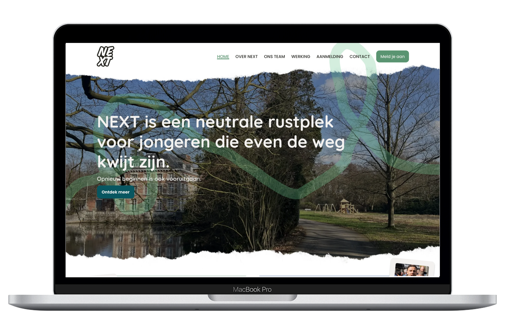
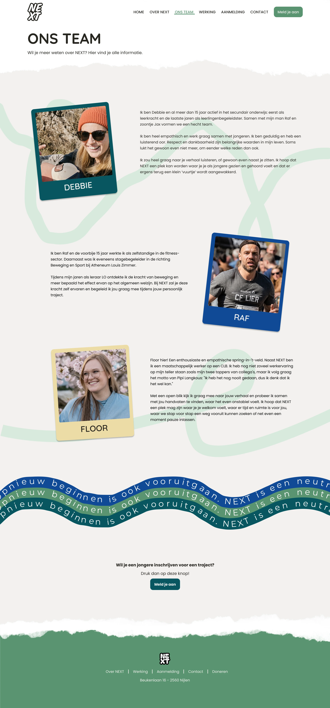
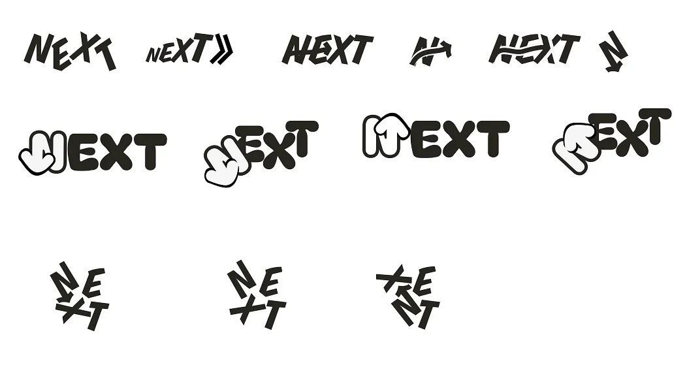
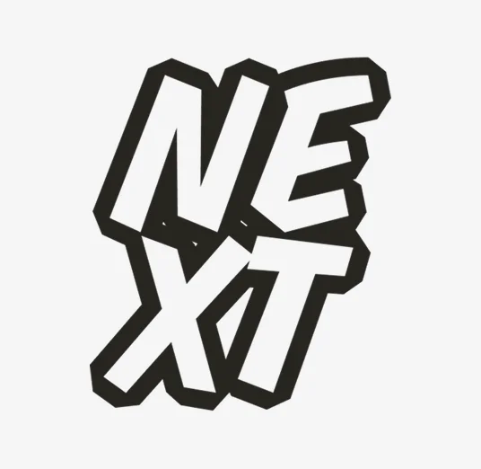
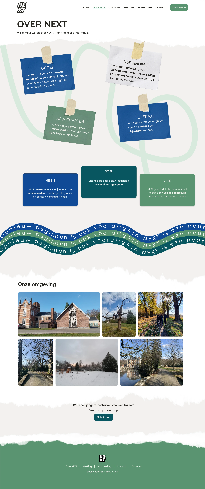

NEXT — Branding en Websiteontwerp
Samen met mijn team ontwierp ik de branding en een websiteconcept voor NEXT, een organisatie die jongeren van 13 tot 19 jaar ondersteunt. Mijn bijdrage lag bij UX/UI-design en de implementatie in Bludit.

De opdracht
NEXT biedt jongeren die vastlopen op school, thuis of sociaal een veilige plek om opnieuw perspectief te vinden. De organisatie had een herkenbare identiteit en een website nodig die haar werking en aanmeldingsprocedure duidelijk uitlegt.
Onze uitdaging was om jongeren, ouders, scholen en CLB-medewerkers te informeren zonder de website te formeel of tekstzwaar te maken.
Tijdlijn van het Project NEXT
Mijn bijdrage aan het project
Ik werkte mee aan de research, branding en navigatiestructuur. Daarnaast vertaalde ik de inhoud en feedback naar ontwerpen en webpagina’s.
- Wireframes voor ‘Over NEXT’ en ‘Werking’.
- High-fidelity ontwerpen voor ‘Over NEXT’ en ‘Ons team’.
- Implementatie van ‘Over NEXT’ en ondersteuning bij de contactpagina in Bludit.

Onderzoek en structuur
Een videorondleiding en infobrochure gaven ons inzicht in de doelgroep, waarden en werking van NEXT. Op basis daarvan verdeelden we de informatie over zes onderdelen: Home, Over NEXT, Werking, Aanmelding, Ons team en Contact.
Samen met de klant verfijnden we de navigatie. Een duidelijke aanmeld-CTA op elke pagina hield de belangrijkste actie bereikbaar.

Branding en klantfeedback
Onze eerste richting gebruikte lichte, natuurlijke kleuren en een klavertjevier als symbool voor groei en kansen. NEXT vond de uitstraling passend, maar miste energie en kracht.
We voegden meer contrast en een donkerdere groentint toe en werkten het logo verder uit tot een typografisch geheel. NEXT keurde het logo en de slogan goed.



Van wireframes naar website
Met wireframes onderzochten we de inhoud, layout en informatiehiërarchie. Feedback van NEXT en de docenten leidde tot ongeveer negen iteraties in Figma.
In het uitgewerkte ontwerp combineerden we foto’s, post-its en golvende lijnen voor een persoonlijke uitstraling. Daarna bouwden we de website in Bludit. De implementatie liet zien dat de mobiele lay-out en afbeeldingsoptimalisatie verdere aandacht nodig hadden.

Resultaat en projectstatus
NEXT selecteerde ons voorstel uit vier teams. Door een latere andere opportuniteit werd onze website niet als definitieve site afgewerkt.
NEXT gaf aan ons te zullen vermelden op de nieuwe website. Voor mij lag de waarde vooral in het verwerken van klantfeedback en het vertalen van ontwerpen naar een werkende website.
NEXT gebruikt het logo dat we ontwierpen.
Bekijk het interactieve websiteconcept.